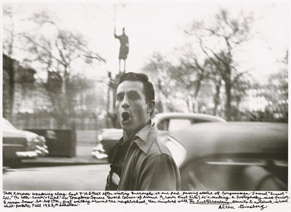
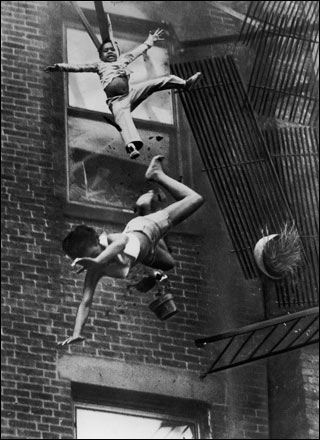

-
Memories and Images: Art and Documentary in Two Photography Shows
by Sam Biederman July 9, 2010
“Photography has become as widely practiced an amusement as sex and dancing—which means that, like every mass art form, photography is not practiced by most people as an art,” Susan Sontag wrote in On Photography. “It is mainly a social rite, a defense against anxiety, and a tool of power.”
When Sontag published these essays in 1977, photos appeared in newspapers and on TV, in family albums and office desks. It seemed that photography couldn’t get more pervasive. How quaint. Now every cell phone is somehow incomplete without a camera, Polaroid has stopped producing instant film because it’s not instant enough, and every personal image is posted on Facebook for browsing and comment.
When we voluntarily photograph and display all of our actions, does photography’s value as art disappear? Of course not—that would be like saying that because we use the written word to write rent checks, literature is dead. But it does become increasingly important to delineate photographs that have seem to have aesthetic value beyond their documentary function.
In Washington, DC there are currently two photography shows on display that come up against the question of what makes a photograph count as ‘art.’ Both exhibitions feature work that predates the digital, so the photographers necessarily had to be somewhat careful about how they spent their film. But in a world where photos of everything are everywhere, a photography show—and particularly a documentary show—poses an intellectual and aesthetic challenge: what makes these pictures more significant than the ones I take with my iPhone? Beat Memories: The Photographs of Alan Ginsburg, currently up at the National Gallery through mid-September has a clear answer: photos are worth looking at if they are have famous people in them.
The exhibit fills two small rooms with photos the poet himself took from 1953 through the mid-nineties (with a two-decade break between 1963 and the mid-eighties, noted but left oddly unexplained by the wall text). The collection starts out promisingly, if only because it piques historical curiosity. A shot of St. Mark’s and Ave A from fifty years ago sets the scene nicely. And there are off-handed pictures of Larry Rivers, Peter Orlovsky, Jack Kerouac, and other mid-century creative notables in their youth, fooling around, mugging for the camera or striking mock-heroic poses. It’s engaging if not illuminating.
But as the show goes on and the subjects age, it becomes clear that some essential insight is missing here. The snapshots have very little to say that’s not beneath the surface. There’s no comment in their compositions, and no deeper personalities betrayed in the candid shots. These are, in fact, the pictures Ginsburg would have taken with his iPhone, had he had one, and he seems to know it. Like a Facebook user, he supplements the early photos with exuberant, handwritten comments in the margins as if to provide meaning that’s not apparent in the image. Just because these photos were taken by an artist doesn’t make them art. These are documentary images of the lives of great artists, artifacts better suited for display at the Library of Congress than at the National Gallery.
Across the Mall at the (unfortunately named) Newseum, a museum of news media, there’s another documentary show on display. The Pulitzer Prize Photo Gallery makes no claims to the mantle of art. The images in the show capture a time or an event. As stated in the press materials, the photos “record the defining moments of our time.” They exist first and foremost to relay information about events to the viewer, not appeal to emotion and intellect.
While the art part of the Ginsburg art show was sadly elusive, it kept creeping into the Pulitzer Gallery at the Newseum. The display – comprised of photos that have won one of Pulitzer’s various news photography prizes – is worthy of attention not only because their subject matter is historically important, but because, unlike the Ginsburg photos, some additional, aesthetic value instills them with deeper meaning. These photos are not exhausted by their documentary function, but persist, pushing beyond the simple act of communication for which they are ostensibly known.
Certain images are so familiar as to be difficult to examine with new eyes—there was the protester at Kent State shot by the National Guard (1971), the Vietnamese girl fleeing a Napalm attack, the soldier being welcomed home by his family. But it was the lesser-known pieces that stood out. In Joseph Forman’s 1976 black-and-white photo, a fire escape collapses, leaving a toddler dangling by her collar and tossing a woman downward, hands and legs spread. Flowerpots fall around the woman’s arms and feet, as the child’s stunned face catches in midair; the world is suddenly, terrifyingly disordered.
Another piece, taken in 1995 and credited to the Associated Press, shows Hutu refugees in Rwanda. A row of adults, each flanked by small children, marches down a road. Each grown-up is saddled with huge bags, and looks on, expressionless and exhausted. At their sides, the children march too, but rather than look ahead, they glance warily to the side, at something unknown outside the left corner of the frame. These people form the vanguard of a line of refugees that stretches up a dusty road that climbs a brilliant green hill; there are hundreds, maybe thousands of them. In pictures or in words, I have never encountered the experience of refugees expressed with such economy—the physical exhaustion, the anxiety of the unknown, the unseen horror just behind them.
There is nothing incidental in these images, even when they depict everyday events. In John H. White’s 1983 black and white photos of Chicago, two children run beaming towards the camera, one seeming to leap upwards, the other moving down. Behind them rises the grid of a giant apartment complex. The figures are ecstatic, unstable variables against the building’s graph-paper façade; the individual’s rise and fall is the life of the city.
The Newseum displays these photos alongside a lot of information. The wall text includes historical background, what happened to the subjects after the photo was taken and commentary from the photographer. This is valuable and, given the museum’s focus on “the first draft of history,” it’s appropriate. But this contextualization seems also to refuse the artistic power these pieces have outside of history. The photos’ aesthetic integrity, in their attention to composition, light, and color, in combination with their irreducibility to words or information, make them much more than a record of events. Seen together, they speak to the exhilarating and confounding complexity of existence. Perhaps this is why many viewers on my visit to the gallery simply ignored the wall text entirely and gazed only at the photos. The images have an affective power that exceeds the specific events they documented.
Sontag writes that what separates photographs from television is that photos are curated images. That is, the best and most meaningful moment in time is frozen for examination and reflection; human experience, edited, becomes art. As digital has freed us of the material barriers to shooting a thousand photos of our cats, all photos can no longer claim this distinction. The Ginsburg show proves that even when film required forethought not everyone, not even bona fide artists of other media, had a sense for what to photograph and how to capture it. But the Pulitzer photos illustrate that even in our over-documented age, a well-taken photo still has the power to silence a room.